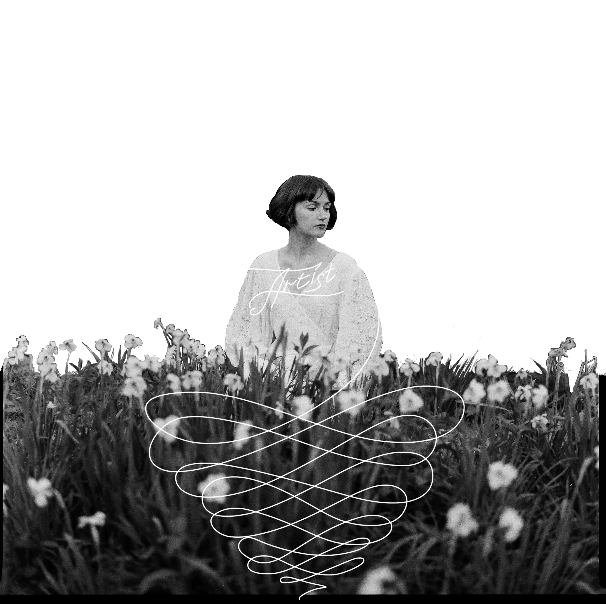

Victoria — artist. Painting, drawing, illustration




ABOUT ME
My name is Victoria. I am an artist. In my work I begin with myself. I am interested in the effect of the familiar, the ordinary, and the understood — in how something simple and beautiful shapes a person.
My artistic credo is to multiply the beauty around me. While everyone is looking for new meanings, I want to make sense of the old ones.
Victoria


How does a domestic space turn from intimacy into solitude? Where does being together with oneself begin? When does a bathroom stop being ordinary and everyday?
Artist
Statement
In my artistic practice I work with the experience of feeling.
Choosing the techniques of classical painting and drawing, I turn to everyday subjects and sharpen them with a new view of familiar things.
Text, installation, and working with a complete series play an important role in my work. My interests circle around the theatrical gesture, animated movement, and the documentary quality of printmaking.


Notebooks, fragments of phrases, and shards of memory. Why do we collect physical memory? What remains at the end of what we saw and remembered?
The Wall
Works you can take home. Sold pieces remain on the wall — a nail and a trace that has not faded.
ShippingFrom Moscow worldwide. Originals travel in a rigid tube or crate.
TimingRussia 3–7 days, international 10–21 days.
PaymentArranged by message — bank transfer or card.
Get in touch
* Instagram belongs to Meta, recognized as an extremist organization and prohibited in the Russian Federation.